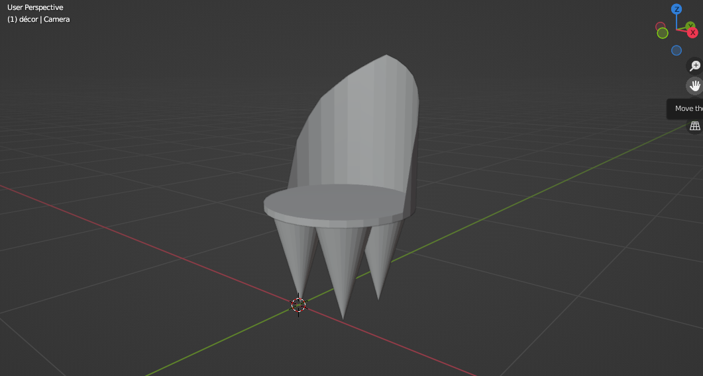
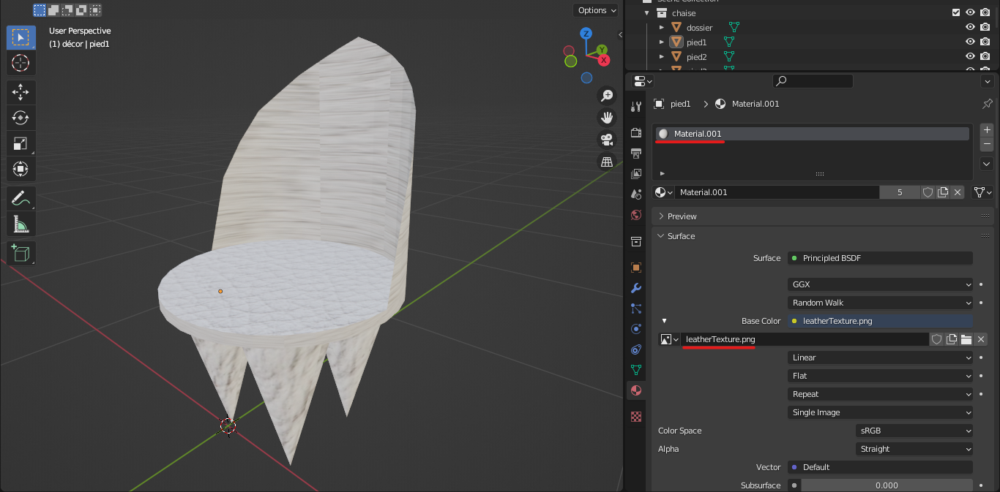
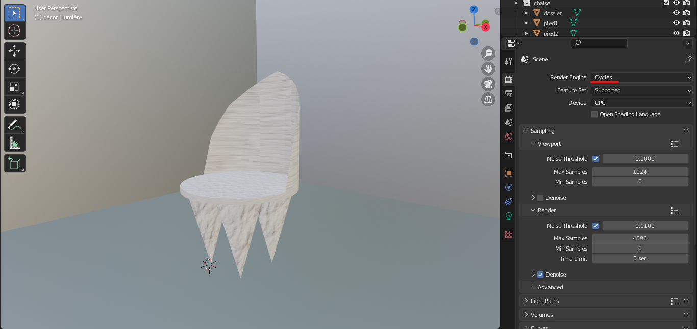
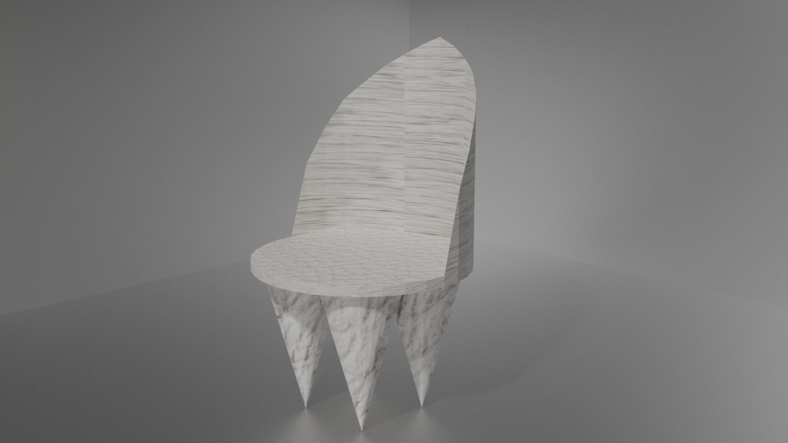

Après avoir défini mon design, il a fallu que je modélise cette chaise en 3d, afin d’en faire une affiche et une bannière.
Pour cela, j’ai utilisé Blender, étant donné que c’était le logiciel de modélisation 3d que j’utilisais depuis le lycée. En plaçant correctement des formes simples, j’ai réussi à avoir le résultat désiré de ma chaise en 3d.

Maintenant, il faut lui donner une texture. J’ai d’abord créé un nouveau matériau que j’ai assigné à ma chaise. En cliquant sur le point jaune à côté de « base color », on a la possibilité de changer le type de texture. Il suffit de cliquer sur « image texture », choisir l’image désirée et voilà, notre chaise est désormais en cuir blanc !

Pour finir, il va falloir faire un rendu. On rend notre chaise présentable en mettant des murs a l’arrière et un sol, avec une texture métallique. On ajoute quelques lumières et on place la caméra convenablement.

Pour finir, on va dans la fenetre « render », on change le moteur de rendu en « cycles » puis on clique sur « render ». On obtient un beau rendu 3d de notre chaise.

J'ai aussi effecuté une animation 3d de ma chaise.
Psst… je fais des animations 3d sur ma chaine Youtube. Allez voir :)